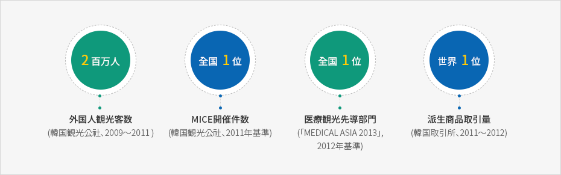
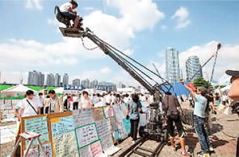
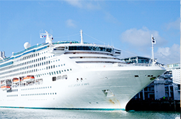
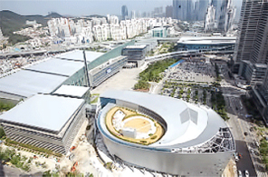

知識型サービス産業インフラ
- Home
- 戦略産業
- 知識型サービス産業インフラ
概要
アジア一の映画・映像都市であり、韓国の代表的な観光都市、世界1位の造船所が近くにある特化金融の中心地でもある釜山は、次世代成長エンジンであり、外資誘致の基盤となる知識型サービス産業のインフラ構築に力を入れています。


3년 연속 해외관광객 2 백만명(medical asis 2013, ＇12년기준),
MICE 행사 개최 수 전국 1위(한국관광공사, ＇11년 기준),
의료관광 선도 부문 전국 1위(medical asis 2013, ＇12년기준),
3년 연속 파생상품 거래량 세계 1위(한국거래소, ＇11~＇12)

育成産業
海洋・派生特化金融と映画・映像制作のメッカ
船舶・特化金融中心地の造成
- 釜山国際金融センター複合開発第2段階事業の推進(2014年～2017年)：延べ面積18万2千㎡、地上36階・49階(2棟)、業務施設(オフィス兼住居ビルなど)、宿泊施設(ホテル)、販売施設
- グローバル金融人材の育成：国際金融研修院の運営、金融専門大学院設立の推進
映画・映像インフラの構築
- グローバル総合撮影所の造成(2013年～2017年)：達陰山一帯77万6千㎡
- アジア映画学校の設立：映画撮影スタジオの増築(地上3階～4階)、1,700㎡(2015年8月)
- センタムシティ内映像産業センター設立(2010年～2016年)、釜山映画体験博物館建設(2008年～2016年)
- 1,000億ウォン規模の映画企画・開発・制作支援ファンド運営
- 映画(ドラマ)制作スタッフの宿泊所支援、映画の企画・開発支援及び制作・撮影支援、映像ベンチャーセンターの運営
活気づいた文化コンテンツ産業の躍進
文化コンテンツ産業の活性化
- 地域ソフトウェア融合クラスターの構築及びコンテンツ融合R&Dセンターの設立(2014年～2018年)
- 釜山コンテンツコリアラボの支援(ICT融合型創業・創作)
- モバイルゲームセンターの開所(2015年)
- 文化コンテンツスタープロジェクト発掘支援
観光・コンベンション都市、釜山の存在感向上
クルーズ海洋観光及び医療観光の活性化
- 国際クルーズ船釜山共同母港の誘致、釜山国際クルーズ博覧会の開催(2015年)
- 沿岸クルーズ観光商品の開発・運営：龍湖湾遊覧船の運航(2014年10月から、3隻)
- 海外医療観光関係者招待体験ツアー、医療観光通訳ボランティアの運営(14言語圏、370人)
- 滞在型医療観光クラスターの構築(2014年～2018年)
MICE産業の先進化
- BEXCO(べクスコ)付帯施設の敷地開発(2013年～2017年)：展示・コンベンション施設、ホテル(宿泊)施設など、14万㎡(地下6階/地上37階)
グローバル競争力を備えた観光インフラの拡充
- 東釜山観光団地の造成(2015年～2017年)：投資誘致(面積の60%)、敷地造成竣工(2015年)
- 海雲台観光リゾート(2006年～2018年)：101階規模
- 釜山グリーンレールウェイの造成(2014年～2017年)：東海南部線廃線(9.8㎞)を利用した散策路やサイクリングロードなど
- 荒嶺山展望タワー(2014年～2017年)：1,000㎡
-

映画「国際市場で逢いましょう」のロケ地
-

クルーズ海洋観光の活性化
-

MICE産業の先進化